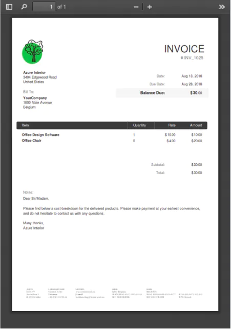
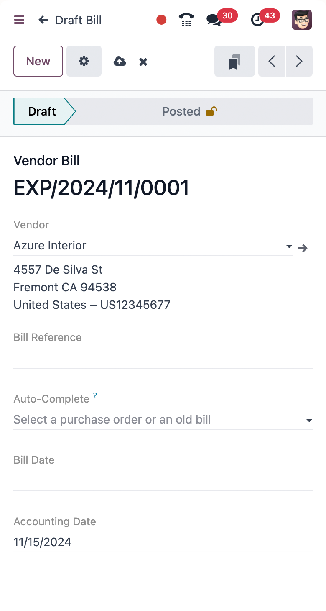

Imagine one AI-native Accounting platform for all your financial operations, from reconciliation and expenses to tax returns and real-time reporting. Fast, complete, and simple.
Free, forever, with unlimited users. See why
Speed matters. All operations are processed in less than 90 milliseconds, faster than the blink of an eye. It helps accountants do much more in less time. A snappy interface is a game changer.

Experience zero data entry. Our advanced AI-powered invoice data capture has a 98% recognition rate. All you have to do is to validate the invoice.




Your mobile companion. Take pictures of your expenses, and let the Artificial Intelligence do the rest!
Never import bank statements manually again. Odoo integrates with 28,000 banks from all around the world!
95% of the transactions are matched automatically with the financial records.
Odoo is pre-configured to address your country's requirements: charts of accounts, taxes, country-specific reports, electronic invoicing, audit files, and fiscal positions to automatically apply the right tax rates and accounts.
Real-time financial performance reports empower you to make informed decisions for your business. Additionally, you can easily annotate, export, and access detailed information for each report.
Various EDI file formats are available depending on your company's country. Send and receive electronic invoices in multiple formats and standards, such as Peppol.
Odoo helps you identify late payments and allows you to schedule and send the appropriate reminders based on the number of days overdue. You can send your follow-ups via different means, such as email, post, or SMS.
Defer your revenues and expenses, either manually or on each invoice/bill validation. You can also audit the entries from dedicated reports.
No matter where your customers and suppliers are established, if they have a Tax ID or not, if the goods are sold cross-border, Odoo computes the right taxes and income or expense accounts.
Expand as you grow.